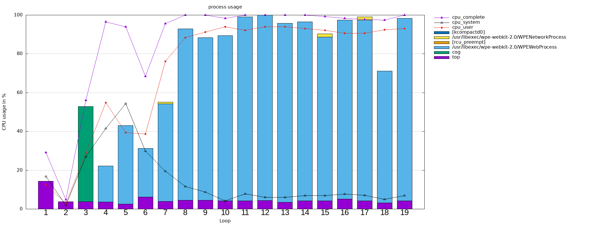

tbottest.tc - Testcases¶
tbot-test come bundled with a bunch of testcases. Here is an overview:
Common Testcases¶
- tbottest.tc.common.escape_ansi(line: str) str[source]¶
helper for escaping ansi codes
- Parameters:
line – string which should be escaped
- Returns:
ansi escaped string
- tbottest.tc.common.search_string_in_multiline(search, lines) bool[source]¶
search string search in multiline lines
- Parameters:
search – string to search
lines – multiline string, in which we search the string
- Returns:
True if found else False
- tbottest.tc.common.search_multistring_in_multiline(searches, lines) bool[source]¶
search mutliple strings in mutli liner
- Parameters:
search – array of strings to search in lines
lines – multiline string, in which we search the string
- Returns:
True if all strings are found else False
- tbottest.tc.common.lx_cmd_exists(lnx: LinuxShell, cmd) bool[source]¶
check if command on linux machine exists
- Parameters:
lnx – Linux machine we run on
cmd – command name
- tbottest.tc.common.lx_devmem2_get(lnx: LinuxShell, addr: str, typ: str) str[source]¶
use devmem2 to read value from addr
- Parameters:
lnx – Linux machine we run on
addr – address we act on
type –
devmem2 typeaccess operation type : [b]yte, [h]alfword, [w]ord, [l]ong
- Returns:
value
- tbottest.tc.common.lnx_check_revfile(lnx: LinuxShell, revfile, difffile=None, timeout=None) bool[source]¶
compare the register values defined in revfile with the values read on Linux machine with devmem2
If difffile != None write differences found into this file.
see also:
tbottest.tc.generic_board.generic_lnx_check_dump_files()- Parameters:
lnx – Linux machine we run on
revfile – reference file we use
diffile – if not None, file in which testcase writes differences found
timeout – timeout between devmem2 calls
- tbottest.tc.common.lnx_create_revfile(lnx: LinuxShell, revfile, startaddr, endaddr, mask='0xffffffff', readtype='w') bool[source]¶
create a reference file revfile with values read on Linux machine with devmem2 from startaddr to endaddress, and readtype “w”
see also:
tbottest.tc.generic_board.generic_lnx_create_dump_files()- Parameters:
lnx – Linux machine we run on
revfile – created revfile
startaddr – address from which the testcase starts dumping
endaddr – address on which the testcase stops dumping
mask – written mask into revfile
readtype – used tpye for devmem2 call, default “w”
- tbottest.tc.common.generic_machine_dump(typ, machine, startaddr, endaddr, inc, gaps, filename) None[source]¶
generate a generic register dump from a linux or U-Boot machine. starting from startaddr until endaddr. Increment in each step the current address with the value in inc.
machine contains a linux or U-Boot machine, simply the machine from which you want to create the registerdump.
On Linux machine the value is read with devmem2 tool, in U-Boot with the md command.
The testcase writes the address and the value into the file with filename filename.
It is possible to define gaps (to prevent accessing registers which create a core dump, or simply to not dump registers you are not interested in!
With this approach you can dump register in linux and U-Boot and simply compare the 2 resulting txt files. Or with testcase generic_machine_dump_write write for example a register dump, created on a linux machine to an U-Boot machine.
example:
lcdif2_gaps = [ {"iaddr":"0x32e9002c", "naddr":"0x32e90030"}, {"iaddr":"0x32e90038", "naddr":"0x32e90200"}, {"iaddr":"0x32e90204", "naddr":"0x32e90208"}, {"iaddr":"0x32e90218", "naddr":"0x32e9021c"}, ]
So if new address is equal to “iaddr”, it gets replaced with the value in naddr.
- Parameters:
type – values “linux” or “u-boot”, we should detect this from machine parameter
machine – machine we run on
startaddr – address from which the testcase starts dumping
endaddr – address on which the testcase stops dumping
inc – address increment for the next step
gaps – array if dictionary, see above example
filename – file to where register values get stored
- tbottest.tc.common.generic_machine_dump_write(typ, machine, filename) None[source]¶
Write a created register dump in file filename, created with testcase
generic_machine_dump
to the machine machine.
- tbottest.tc.common.lnx_check_cmd(lnx: LinuxShell, cmd_dict) bool[source]¶
check commands in list of dictionaries cmd_dict. for each element in list execute command cmd_dict[“cmd”] and if cmd_dict[“val”] != “undef” check if cmd_dict[“val”] is in command output
- Parameters:
lnx (machine) – machine on which commands are executed
cmd_dict (dict) – list of dictionary with command and return values.
- tbottest.tc.common.lnx_create_random(lnx: LinuxShell, f: str, len: int) bool[source]¶
create file f with len bytes and random content
- Parameters:
lnx – linux machine on which the file gets created
f – full path and filename which gets reated
len – length of created file
- tbottest.tc.common.lnx_compare_files(lnx: LinuxShell, f1: str, o1: int, f2: str, o2: int, length: int) bool[source]¶
compare the content of the 2 files f1 @ offset o1 and f2 @ o2 raise RuntimeError if they differ.
- Parameters:
lnx – linux machine on which the files get compared
f1 – full path to first file
o1 – offset in first file
f2 – full path to second file
o2 – offset in first file
length – length (in bytes)
- tbottest.tc.common.lnx_get_hwaddr(lnx: LinuxShell, name: str) str[source]¶
get MAC address from interface output
ToDo: add a cache if often called
- Parameters:
lnx – linux machine from which we want to get the hwaddr
name – name of the interface
- tbottest.tc.common.lnx_get_ipaddr(lnx: LinuxShell, name: str, ip6: bool = False, poll: int = 5, sleep: int = 2) str[source]¶
get ipaddr from ifconfig output
ToDo: add a cache if often called
- Parameters:
lnx – linux machine from which we want to get the ipaddr
name – name of the interface
ip6 – set to true if you want the ipv6 addr
poll – if != 0 poll n times to get the ip
sleep – sleep in seconds between polls
- tbottest.tc.common.lnx_start_bin_with_timeout(lnx: LinuxShell, binary: str, seconds: float) None[source]¶
start binary binary for n seconds
- Parameters:
lnx – linux machine we work on
binary – name of the binary which get started
seconds – seconds it get executed
- tbottest.tc.common.lnx_wait_for_ip(lnx: LinuxShell, name: str, loops: int, timeout: int, ip6: bool = False) str[source]¶
wait until ip is set on device name
- Parameters:
lnx – linux machine we run
name – name of the device for which we wait for the ip
ip6 – set to True if you want to get ipv6 ipaddr
loops – maximal wait loops
timeout – timeout if process is not found
- Returns:
ip addr
- tbottest.tc.common.lnx_wait_for_file(lnx: LinuxShell, name: str, loops: int, timeout: int) bool[source]¶
wait until file with name name is found with “ls -l”
- Parameters:
lnx – linux machine we run
name – name of the file for which we wait
loops – maximal wait loops
timeout – timeout if file is not found
- tbottest.tc.common.lnx_wait_for_module(lnx: LinuxShell, name: str, loops: int, timeout: int) bool[source]¶
wait until module with name is loaded
- Parameters:
lnx – linux machine we run
name – name of the module for which we wait
loops – maximal wait loops
timeout – timeout if modulename is not found
- tbottest.tc.common.lnx_wait_for_process(lnx: LinuxShell, name: str, loops: int, timeout: int) bool[source]¶
wait until process with name name is found with pidof
- Parameters:
lnx – linux machine we run
name – name of the process for which we wait
loops – maximal wait loops
timeout – timeout if process is not found
- tbottest.tc.common.board_ub_delete_env(ub: Optional[UBootShell] = None, mtdparts=['env', 'env-red']) None[source]¶
erase the MTD partitions defined in mtdparts
- Parameters:
ub – U-Boot machine we run on
mtdparts – List of dictionary with MTD parts we want to delete
mtdparts = [ {"name":"bootloader", "size":"180000"}, {"name":"env", "size":"10000"}, {"name":"env-red", "size":"10000"}, {"name":"keys", "size":"10000"}, {"name":"rescue", "size":"3e50000"}, ]
- tbottest.tc.common.board_ub_delete_emmc(ub: Optional[UBootShell] = None, device: str = None, erasesz: str = None) None[source]¶
delete the emmc device
- Parameters:
ub – U-Boot machine we run on
device – U-Boots dev number for the mmc
erasesz – number of blocks which get erased (started from offset 0)
- tbottest.tc.common.board_wait_for_device(lnx: Optional[LinuxShell] = None, device: Optional[str] = None, retries: int = 1, retry_timeout: float = 0.1) None[source]¶
wait for device until it is up
- Parameters:
lnx – linux machine we work on
device – path to device we wait for
retries – retry count
retry_timeout – float, sleep after device is not up
- tbottest.tc.common.board_set_default(lab: Optional[LinuxShell] = None, ub: Optional[UBootShell] = None, lnx: Optional[LinuxShell] = None, mtdparts=['env', 'env-red'], device: str = None, erasesz: str = None) None[source]¶
set board into default state, so we have a clean base for all our tests.
delete SPI NOR
delete emmc
- Parameters:
lab – lab linux machine
ub – U-Boot machine we run on
lnx – board linux machine
mtdparts – List of MTD parts we want to delete
device – U-Boots dev number for the mmc
erasesz – number of blocks which get erased (started from offset 0)
- tbottest.tc.common.lab_check_part_exists_and_create(lab: Optional[LinuxShell] = None, device: Optional[str] = None, partition: Optional[str] = None) None[source]¶
check if partition exists on device.
ToDo: create it if not
- Parameters:
lab – linux machine we work on
device – device on which the partition must exist
partition – partition name
- tbottest.tc.common.ub_check_i2c_dump(ub, dev, address, i2c_dump) bool[source]¶
check if i2c dump is correct
- Parameters:
ub – U-Boot Machine we run
dev – i2c dev number
address – i2c addr
i2c_dump – list of dumped lines, see example below
sample_i2c_dump = [ "0x00: 11 00 00 21 00 01 3f 01 00 7f 00 00 00 00 00 81", "0x10: 00 00 3f 00 00 00 00 00 00 00 00 10 ad de xx xx", ] before ":" start address, after list of values 'xx' ignore
- tbottest.tc.common.lnx_check_beeper(lnx: Optional[LinuxShell] = None, beeper=None) None[source]¶
check if dmesg output contains strings in dmesg_list
- Parameters:
lnx – linux machine on which beeper command is executed
beeper – list of dictionwry with infos for beeper
beeper definition example:
beep = [ {"freq":"440", "length":"1000", "device", "/dev/input/by-path/platform-buzzer-event"}, ]
- tbottest.tc.common.lnx_check_dmesg(lnx: Optional[LinuxShell] = None, dmesg_strings=None, dmesg_false_strings=None) bool[source]¶
check if dmesg output contains strings in dmesg_list
- tbottest.tc.common.lnx_create_file(lnx: Optional[LinuxShell] = None, filename: Optional[AnyStr] = None, filedata: List = []) str[source]¶
create a file with filename on linux machine lnx with lines in array filedata.
example:
scriptname = "/tmp/cansend.sh" filedata = ["#!/bin/sh", "", "while true;do", " sleep 5", "", " cansend can0 15a#1122334455667788", "done" lnx_create_file(lab, scriptname, filedata)
- Parameters:
lnx – linux machine on which the file is created
filename – string of the created file
filedata – List of lines
- tbottest.tc.common.lnx_install_package(lnx: LinuxShell, package: str) bool[source]¶
detect OS version installed on linux machine and try to install package
- Parameters:
lnx – linux machine on which the package is installed
package – Name of the package
- tbottest.tc.common.tbot_copy_file_to_board(lab: LinuxShell, lnx: LinuxShell, ethdevice: str, filename: str) None[source]¶
copy file filename from lab host in tmpdir to board on tmpdir
- Parameters:
lab – lab machine where the file can be found
lnx – linux machine to which the file gets copied
ethdevice – ethernet device which is used
filename – name of the file
- tbottest.tc.common.tbot_start_script_on_board(lab: LinuxShell, lnx: LinuxShell, ethdevice: str, scriptname: str)[source]¶
copy script scriptname from lab host in tftp dir to board on tmpdir and execute it
- Parameters:
lab – lab machine where the script can be found
lnx – linux machine to which the script gets copied
ethdevice – ethernet device which is used
scriptname – name of the script
- tbottest.tc.common.tbot_start_script_on_lab(lab: LinuxShell, lnx: LinuxShell, ethdevice: str, logfilename: str, scriptname: str, labtbottestcasepath: str)[source]¶
copy an log file to labhost and start script scriptname, which should check, if logfile is Ok.
- Parameters:
lab – lab machine where the script can be found
lnx – linux machine to which the script gets copied
ethdevice – ethernet device which is used
logfilename – logfilename
scriptname – name of the script
labtbottestcasepath – path where the script can be found on lab
- tbottest.tc.common.tbot_start_thread(lnx: Optional[LinuxShell] = None, cmd: Optional[str] = None) UUID[source]¶
start linux command in thread and return an id
output of the command gets stored in
stdout : f"/tmp/thread_1_{tid}" stderr : f"/tmp/thread_2_{tid}"
- Parameters:
lnx – linux machine where the command cmd is started in background
cmd – command which gets started in background
- Returns:
uuid.UUID id
- tbottest.tc.common.tbot_stop_thread(tid: Optional[UUID] = None, signal: Optional[str] = None) int[source]¶
stop linux command with tid
- Parameters:
lnx – linux machine where the command cmd is started in background
tid – id got from tbot_start_thread
signal – may you need to kill the process with an special signal number
- tbottest.tc.common.sudo_subshell(lnx: LinuxShell = None, cmds: str = [], password: str = None) list[source]¶
execute in a sudo subshell the commands in cmds
Best you use a passwordless sudo approach, for example add in /etc/sudoers
<username> ALL=(ALL) NOPASSWD: ALL
If not possible pass the sudo password to this function.
This function is more or less just an example how to execute commands under sudo, because the commands are only executed without any possibility to check the output.
If you need this, see this as an example how to!
- Parameters:
lnx – linux machine where the command cmd is started in background
str – sudo password, pass None (default) if not needed
cmds (list) – list of commands (strings), which are run under sudo
Common generic Testcases¶
This testcases work without tbot imports
CAN Tests¶
- tbottest.tc.can.board_setup_can(lnx: LinuxShell, candev: List[str] = ['can0', 'can1'], br: str = '500000', tql: str = '500', usesudo: bool = False) None[source]¶
setup the can interface on linux machine
- Parameters:
lnx – linux machine where we work on
candev – List of candevices which get intialized
br – used bitrate
tql – use tx queuelen
usesudo – if we need a sudo for calling ip command
- tbottest.tc.can.lnx_can_write_dump_compare(lab: LinuxShell, lnx: LinuxShell, lnxsend: LinuxShell, senddev: List[str], lnxread: LinuxShell, readdev: List[str], bitrate: str, txqueuelen: str, data: List[dict]) None[source]¶
send in lnxsend shell with cansend over senddev the data and dump it with candump in lnxread shell on readdev. Use bitrate and txqueuelen
- Parameters:
lab – linux machine where we work on
lnx – linux machine where we work on
lnxsend – linux machine from where we send CAN data
senddev – List of device from which we send
lnxread – linux machine where we receive CAN data
readdev – devices from which we read
bitrate – used bitrate
txqueuelen – used txqueuelen
data – List of dictionary, see below
data is an dictionary with format:
{"dev":"linux device name", "data":"data format strig for cansend", "res":"resulting line in dump file created from candump"}
- tbottest.tc.can.board_lnx_cangen(lab: Optional[LinuxShell] = None, lnx: Optional[LinuxShell] = None, lnxsend: Optional[LinuxShell] = None, labtbottestcasepath: str = None, tmpdir: str = '/tmp', candev: List[str] = ['can0', 'can1'], candevsend: List[str] = ['can0'], candevdump: str = 'can0', frames: str = '1000', dllength: str = '8', bitrate: str = '500000', txqueuelen: str = '500', cangen_gap: str = '10') None[source]¶
use cangen for generating testdata
CPU Tests¶
- tbottest.tc.cpu.board_lnx_cpufreq(lnx: Optional[LinuxShell] = None, cpufreq=None) None[source]¶
simple cpufreq setup tests.
look for all elements in cpufreq, if the file in “file” contains the value “val”
- Parameters:
lnx – linux machine we work on
cpufreq – List of dictionary see below
cpufreq = [ {"file" : "/sys/devices/system/cpu/cpufreq/policy0/scaling_governor", "val" : "performance"}, {"file" : "/sys/devices/system/cpu/cpufreq/policy0/cpuinfo_max_freq", "val" : "1600000"}, {"file" : "/sys/devices/system/cpu/cpufreq/policy0/stats/time_in_state", "val" : "0"}, ]
- tbottest.tc.cpu.generic_get_socname(lnx: Optional[LinuxShell] = None) None[source]¶
Try to find out the SoC name.
First approach is to get name through /proc file /proc/device-tree/soc@0/compatible
Currently supported SoC
fsl,imx8mp-soc -> NXP imx8mp -> return “imx8mp”
- Parameters:
lnx – linux machine where we run
- Returns:
see above table, if SoC could not be detected “not detected”
generic board test¶
- tbottest.tc.generic_board.generic_lnx_check_dump_files(lnx: Optional[LinuxShell] = None) None[source]¶
prerequisite: Board boots into linux
compares for all register dumped into
revfileif they have the same value on linux machine lnx. Register values are read with devmem2 tool.You can configure a
difffileto which found differences are written.- Parameters:
lnx – linux machine where we run
Uses config variable lnx_dump_files from section TC_DUMPFILES_BOARDNAME in BOARDNAME.ini
lnx_dump_files – array of dictionary with configuration for lnx_check_revfile, see
- tbottest.tc.generic_board.generic_lnx_create_dump_files(lnx: Optional[LinuxShell] = None) None[source]¶
prerequisite: Board boots into linux
create a register dump file with name
revfilefromstartaddrtoendaddrwith the devmem2 tool. You find the register file in subdirtbotconfig/BOARDNAME/files/dumpfilesYou need to create this subdir before starting this testcase
Once created this register dump file it can be used with testcase
tbottest.tc.generic_board.generic_lnx_check_dump_files()which will check if all register still have the same value. so for example dump for your current linux kernel the pinmux registers into a dump file and after upgrading to a new linux kernel you can be sure that all pinmux registers stil have the same value!
- Parameters:
lnx – linux machine where we run
Uses config variable lnx_dump_files from section TC_DUMPFILES_BOARDNAME in BOARDNAME.ini
lnx_dump_files – array of dictionary with configuration for lnx_check_revfile
lnx_dump_files = [{"revfile":"name of revfile", "startaddr":"startaddress of dump", "endaddr":"endaddress of dump", "mask":"0xffffffff", "readtype":"readtype of devmem2 command", "difffile":"file which gets created when there are differences (Set to None to disable it)", "timeout":"timeout between devmem2 calls (set to None to disable it)" }]
example:
[TC_DUMPFILES_BOARDNAME] lnx_dump_files = [{"revfile":"control_module.reg", "startaddr":"0x44e10800", "endaddr":"0x44e10808", "mask":"0xffffffff", "readtype":"w", "difffile":"None", "timeout":"None"}]
creates in tbotconfig/BOARDNAME/files/dump the file control_module.reg with content
$ cat tbotconfig/BOARDNAME/files/dumpfiles/control_module.reg # pinmux # processor: ToDo # hardware : ToDo # Linux : Linux xxx-board 5.15.105-stable-standard #1 PREEMPT Thu Mar 30 10:48:01 UTC 2023 armv7l armv7l armv7l GNU/Linux # regaddr mask type defval 0x44e10800 0xffffffff w 0x00000031 0x44e10804 0xffffffff w 0x00000031
- tbottest.tc.generic_board.generic_lx_dump_register(lnx: Optional[LinuxShell] = None) bool[source]¶
Create a register dump on lnx machine, and save it on local hosts workdir in file “generic_registerdump.txt”
- Parameters:
lnx – Linux machine we run on
Uses config variables:
regdump – list of dictionary
regdump = [{"address":"0x30340004"}, {"address":"0x30330070"}]
- tbottest.tc.generic_board.generic_lnx_network_iperf(lab: LinuxShell = None, lnx: Optional[LinuxShell] = None) None[source]¶
prerequisite: Board boots into linux
wrapper for network_linux_iperf with ini file configuration
- Parameters:
lnx – linux machine where we run
iperf – array of dictionary with infos for network_linux_iperf test
ping = [{"ip":"${default:serverip}","retry":"10"}]
- tbottest.tc.generic_board.generic_lnx_network_ping(lnx: Optional[LinuxShell] = None) None[source]¶
prerequisite: Board boots into linux
simple ping test
- Parameters:
lnx – linux machine where we run
ping – array of dictionary with infos for ping
ping = [{"ip":"${default:serverip}","retry":"10"}]
- tbottest.tc.generic_board.generic_lnx_test_beep(lnx: Optional[LinuxShell] = None) None[source]¶
prerequisite: Board boots into linux
make a beep
- Parameters:
lnx – linux machine where we run
Uses config variable beep from BOARDNAME.ini
beep – array of dictionary with infos for beeping
beep = [{"freq": "440", "length":"1000"}]
- tbottest.tc.generic_board.generic_lnx_commands(lnx: Optional[LinuxShell] = None) None[source]¶
prerequisite: Board boots into linux
- Parameters:
lnx – Linux machine we run on
Uses config variables:
lnx_commands – list of dictionary, see below
lnx_commands = [ {"cmd":"linux command", "val":"string commandoutput, 'undef' if none"}, ]
- tbottest.tc.generic_board.generic_lnx_test_dmesg(lnx: Optional[LinuxShell] = None) str[source]¶
prerequisite: Board boots into linux
call lnx_check_dmesg() which checks dmesg output.
- Parameters:
lnx – Linux machine we run on
Uses config variables:
dmesg – list of strings which must be in dmesg output dmesg_false – list of strings which does not appear in dmesg output
dmesg = [ "remoteproc remoteproc0: remote processor wkup_m3 is now up", ] dmesg_false = [ "crash", ]
- tbottest.tc.generic_board.generic_lnx_test_led(lnx: Optional[LinuxShell] = None) str[source]¶
prerequisite: Board boots into linux
switch on and off all leds in list cfg.leds
uses lnx_test_led_simple(), see more info there
- Parameters:
lnx – Linux machine we run on
Uses config variables: leds – array of dictionary with infos for leds
leds = [ {"path":"/sys/class/leds/led-orange", "bootval":"0", "onval":"1"}, ]
- tbottest.tc.generic_board.generic_lnx_all(lnx: Optional[LinuxShell] = None) None[source]¶
start all configured linux testcases
- tbottest.tc.generic_board.generic_kas_get_config(lab: Optional[LinuxShell] = None, bh: Optional[LinuxShell] = None) None[source]¶
return current kas configuration
- Parameters:
lab – Lab Linux machine
bh – Build host machine
- Returns:
KAS config
- tbottest.tc.generic_board.generic_kas_checkout(lab: Optional[LinuxShell] = None, bh: Optional[LinuxShell] = None) None[source]¶
checks out all yocto layer we need for our yocto build with the help of the kas tool.
See more in KAS class for configuration.
- Parameters:
lab – Lab Linux machine
bh – Build host machine
- tbottest.tc.generic_board.generic_kas_build(lab: Optional[LinuxShell] = None, bh: Optional[LinuxShell] = None) None[source]¶
build all targets defined in kas configuration
See more in KAS class for configuration.
- Parameters:
lab – Lab Linux machine
bh – Build host machine
- tbottest.tc.generic_board.generic_kas_check_build(lab: Optional[LinuxShell] = None, bh: Optional[LinuxShell] = None) None[source]¶
check if oe build finished, if all files listed in kas_check_files exist in deploypath
- Parameters:
lab – Lab Linux machine
bh – Build host machine
Uses config variables: kas_check_files – array of files which must exist
kas_check_files = [ "tmp/deploy/images/${default:machine}/SPL", "tmp/deploy/images/${default:machine}/u-boot.img", "tmp/deploy/images/${default:machine}/fitImage", "tmp/deploy/sdk/${default:sdk_bin}", ]
- tbottest.tc.generic_board.generic_kas_copy(lab: Optional[LinuxShell] = None, bh: Optional[LinuxShell] = None) Path[source]¶
simply copy all files listed in kas_results from our build host to our lab host.
- Parameters:
lab – Lab Linux machine
bh – Build host machine
Uses config variables: kas_results – list of files
kas_results = [ "tmp/deploy/images/${default:machine}/SPL", "tmp/deploy/images/${default:machine}/u-boot.img", "tmp/deploy/images/${default:machine}/fitImage", ]
- tbottest.tc.generic_board.generic_kas_all(lab: Optional[LinuxShell] = None, bh: Optional[LinuxShell] = None) None[source]¶
simply do all build task in one testcase
Calls:
generic_kas_checkout(lab, bh)generic_kas_build(lab, bh)generic_kas_check_build(lab, bh)generic_kas_copy(lab, bh)- Parameters:
lab – Lab Linux machine
bh – Build host machine
HAB (imx specific)¶
KAS¶
- class tbottest.tc.kas.KAS(cfg: dict)[source]¶
Bases:
objecthelper class for building yocto projects with kas
example:
from kas import KAS cfgkas = { "kasurl" : "url from where kas sources get downloaded", "kasversion" : "kas version", "build_machine" : "${default:machine}", "subdir" : "${default:subdir}", "netrc_file" :"/home/${default:build_user}/.netrc", "git_credential_store" : "/home/${default:build_user}/.git-credentials", "ssh_dir" : "/home/${default:build_user}/.ssh", "kascontainer" : @@KASCONTAINER@@, "kaslayer" : "${default:kasurl}/${default:kaslayer}.git", "kaslayername" : "${default:kaslayer}", "kaslayerbranch" : "${default:kaslayerbranch}", "kasconfigfile" : "${default:kaslayer}/${default:kasymlname}", "kas_runtime_args" : '"--privileged -v ${default:build_dl}:/downloads -v ${default:build_sstate}:/sstate-cache"', "bitbakeenvinit" : "sources/poky/oe-init-build-env", "envinit" : [""], "auto.conf" : [ 'DL_DIR="/downloads"', 'SSTATE_DIR="/sstate-cache"', ], "deploypath": "${default:deploydir}", "buildtargets" : ["${default:rootfsname}"] "bitbakeoptions" : ["-q -q"] }
kasurl
if you need (or want) to download kas sources from an url, set this.
You do not need to install kas from this sources, as this class simply use run-kas script from within the kas sources.
kasversion
kas version which get checkedout, when you download kas
build_machine
machine name which is used for the build
subdir
based on the build machines workdir, kas sources get checkout into subdir
kas-container
to build with kas-container script set kascontainer to True You may need to pass –git-credential-store to the kas-container script. Set this through:
git_credential_store
You may need to pass –ssh-dir to the kas-container script. Set this Set this through:
ssh_dir
You may need to pass a .netrc file, so set the kas environment varaible NETRC_FILE.
Set this through:
netrc_file
You may want to set the used container engine through KAS_CONTAINER_ENGINE Set this through:
kascontainerengine
You may want to add “–runtime-args” to kas-container, so set
kas_runtime_args
example:
"kas_runtime_args" : '"-v /work/hs/yocto/download:/workdownload"',
You need the
`"`so escape them!kaslayer
sources which contain your kas config file(s). This class downloads them into kas_get_basepath / “kasconfig”
kaslayername
you can give them an unique name
kaslayerbranch
branch which is used
kasconfigfile
kas config file which is used
auto.conf
You can define here an auto.conf file, if you need to add special settings. The file is created after kas_checkout ends.
"auto.conf" : ['DL_DIR="/workdownload"', 'SSTATE_DIR="/worksstate-cache"', ],
bitbakeenvinit
if you are not using a kas container you need to source the oe environment script (and may have to setup more stuff) before you can call bitbake. This entry contains a list of commandstrings, which are executed when kas has checkout the source code. Default is “sources/poky/oe-init-build-env”
envinit
Here you can add additional commands you need, when you build in kas-container
buildtargets
array of strings containing the names of the build targets with which bitbake is called.
If string “bitbake” is in buildtargets, bitbake command is not added to command.
For example you can write
"buildtargets" : ["core-image", "DISTRO=poky-rescue bitbake rescueimage-fit", "swu-image"]
which will result in the following bitbake calls
$ bitbake core-image $ DISTRO=poky-rescue bitbake rescueimage-fit $ bitbake rescueimage-fit $ bitbake swu-image
bitbakeoptions
options with which bitbake is called (for example you may want to pass -q) So with above setting:
"bitbakeoptions" : ["-q -q"]
you get the bitbake calls:
$ bitbake -q -q core-image $ DISTRO=poky-rescue bitbake rescueimage-fit $ bitbake -q -q rescueimage-fit $ bitbake -q -q swu-image
- kas_get_basepath() Path[source]¶
get the basepath where kas works in at your build host
@tbot.testcase def try_kas_getbasepath( lab: Optional[linux.LinuxShell] = None, bh: Optional[linux.LinuxShell] = None, ): with tbot.ctx() as cx: if lab is None: lab = cx.request(tbot.role.LabHost) if bh is None: bh = cx.request(tbot.role.BuildHost) cfgkas["labhost"] = lab cfgkas["buildhost"] = bh kas = KAS(cfgkas) val = kas.kas_get_basepath()
- kas_checkout() None[source]¶
call “kas checkout” so kas checksout all the needed sources for your ow build, and setup conf directory.
- kas_build(buildtargets=None) None[source]¶
build all buildtargets.
LED¶
- tbottest.tc.leds.lnx_test_led_simple(lnx: Optional[LinuxShell] = None, leds: List[dict] = None) None[source]¶
simple linux led test. Looks if led file ‘brightness’ has after boot the ‘bootval’ value, than sets the ‘onval’ value, checks if ‘brightness’ file has now this value, and set it back to ‘bootval’.
simple … may we can check gpio register, or i2c gpio expander value… perfect would be to recognize the led through a webcam…
- Parameters:
lab – linux machine we work on
lnx – board linux machine
leds – List of dictionary, see below
leds = [ {"path":"/sys/class/leds/led_blue", "bootval":"0", "onval":"1"}, ]
MTD¶
- tbottest.tc.mtd.lnx_mtd_nvram(lnx: LinuxShell, dev: Optional[str] = '/dev/mtd0', tests=None) None[source]¶
write and reread random data on device dev offsets, bytesize and length is defined in array tests which contain dictionary of form
{"bs" : "1", "cnt" : "2", "seek" : "0"}
example:
tests = [ {"bs" : "1", "cnt" : "2", "seek" : "0"}, {"bs" : "1", "cnt" : "2", "seek" : "5"}, {"bs" : "1", "cnt" : "20", "seek" : "5"}, {"bs" : "1", "cnt" : "26", "seek" : "0"}, ]
- tbottest.tc.mtd.lnx_mtd_nvram_reboot(dev: str = '/dev/mtd0', tests=None) None[source]¶
prerequisite: Board boots into linux
fill device with random data, as defined in tests an reboot and check if the nvram contains the same data after the reboot.
{"bs" : "1", "cnt" : "2", "seek" : "0"}
example:
tests = [ {"bs" : "1", "cnt" : "2", "seek" : "0"}, {"bs" : "1", "cnt" : "2", "seek" : "5"}, {"bs" : "1", "cnt" : "20", "seek" : "5"}, {"bs" : "1", "cnt" : "26", "seek" : "0"}, ]
network¶
- tbottest.tc.network.network_linux_iperf(lnx: LinuxShell, lnxh: LinuxShell, sip: str = 'unknown', intervall: str = '5', cycles: str = '5', minval: str = '40', filename: str = 'iperf.dat', subject: str = 'unkown') bool[source]¶
start iperf measurement between lnx and lnxh machine
toolname : iperf (oldversion) or iperf3
lnxh : machine where iperf server runs lnx : machine which start iperf client
interval : seconds between periodic throughput reports cycles : count of intervalls
process¶
- tbottest.tc.process.process_get_gnuplot_work_and_configpath(local: LinuxShell)[source]¶
return config and workpath for gnuplot
- tbottest.tc.process.ps_parse_ps(log) None[source]¶
parse the log output from ps command called with the options
`pid,tid,pcpu,nice,priority,comm", "H", "-C", pname`Warning
This works not with the busybox version
- tbottest.tc.process.ps_parse_top(log, busybox) None[source]¶
parse the log output from top command called with the options
top -b -n X -d X -c -H | awk ‘($1==”%Cpu(s):”)||($8==”R”)||($1==”MiB”) {print}’
if busybox is True, we get log from busybox output, which is
You get back an arrray containing dictionary
{"loop":<loop>, "cpu_system":<cpu dictionary>, "values",<array of values>}
cpu dictionary contains a dictionary of the form:
{'USER': '93.8', 'SYSTEM': '4.4', 'NICE': '0.0', 'IDLE': '1.8', 'WA': '0.0', 'HI': '0.0', 'SI': '0.0', 'ST': '0.0'}
array of values contain dictionaries of the form:
{'PID': '267', 'USER': 'weston', 'PR': '20', 'NI': '0', 'VIRT': '243672', 'RES': '85304', 'SHR': '13792', 'S': 'R', 'CPU': '62.5', 'MEM': '17.0', 'TIME': '93:29.61', 'CMD': '/usr/bin/weston'}
- tbottest.tc.process.lnx_get_process_cpu_usage(lab: LinuxShell, lnx: LinuxShell, pname: str) None[source]¶
get the current cpu usage of process with name
`pname`you get back a dict of the following format:
{'PID': '172', 'USER': 'root', 'PR': '20', 'NI': '0', 'VIRT': '14720', 'RES': '4340', 'SHR': '3748', 'S': 'S', 'CPU': '0.0', 'MEM': '0.9', 'TIME': '3:31.29', 'CMD': 'rngd'}
- tbottest.tc.process.lnx_get_cpu_stats(lnx: LinuxShell) None[source]¶
get cpu stats from top command
you get back a dict of the following format:
{'CPU': '0.0', 'SYS': '20.0', 'NI': '0.0', 'IDLE': '75.0', 'WA': '0.0', 'HI': '0.0', 'SI': '5.0', 'ST': '0.0'}
- tbottest.tc.process.lnx_measure_process(lnx: LinuxShell, pname: str, intervall: float, loops: int) None[source]¶
measure for a process with name
`pname`the cpu usage with`intervall`and`loops`. If`pname`is empty, measure all processes.Warning
This works not with the busybox version
you get back an array which contains a dictionary with entry
{"loop":<loop>, "values",<array of values>}
Array of values contains a dictionary with, see
tbottest.tc.process.ps_parse_ps()If there is no such process
`values`entry is empty
- tbottest.tc.process.is_busybox(lnx: LinuxShell, cmd: str) bool[source]¶
detect if we have a busybox version of command
`cmd`
- tbottest.tc.process.lnx_measure_top(lnx: LinuxShell, intervall: float, loops: int) None[source]¶
call top with intervall
`intervalland`loops`and analyse ityou get back an array which contains a dictionary described in testcase
- tbottest.tc.process.ps_create_measurement_png(local: LinuxShell, pname, intervall, loops, result) None[source]¶
create a png on local host based on the results result from testcase:
tbottest.tc.process.lnx_measure_process()store the gnuplot data in
tbottest/results/measurements/process/{loops}_{intervall}_{pname}.dat
call gnuplot with the config file
tbottest/results/measurements/process/gnuplot-bar.gp
The output png is stored in
`process-usage.png`. Example for viewing it:$ gwenview process-usage.png
example usage of this testcase:
loops = 30 intervall = 1.0 pname = "QtWebEngineProc" with tbot.ctx() as cx: if lab is None: lab = cx.request(tbot.role.LabHost) if lnx is None: lnx = cx.request(tbot.role.BoardLinux) result = lnx_measure_process(lnx, pname, intervall, loops) local = cx.request(tbot.role.LocalHost) ps_create_measurement_png(local, pname, intervall, loops, result)
- tbottest.tc.process.top_create_measurement_png(local: LinuxShell, intervall, loops, result) None[source]¶
create a png on local host based on the results result from testcase:
tbottest.tc.process.lnx_measure_top()store the gnuplot data in
tbottest/results/measurements/process/{loops}_{intervall}_top.dat
call gnuplot with the config file
tbottest/results/measurements/process/gnuplot-bar-cpustat.gp
The output png is stored in
`process-usage.png`. Example for viewing it:$ gwenview process-usage.png
example usage of this testcase:
loops = 30 intervall = 1.0 with tbot.ctx() as cx: if lab is None: lab = cx.request(tbot.role.LabHost) if lnx is None: lnx = cx.request(tbot.role.BoardLinux) result = lnx_measure_top(lnx, intervall, loops) local = cx.request(tbot.role.LocalHost) top_create_measurement_png(local, intervall, loops, result)
example png:

register map¶
- class tbottest.tc.registermap.REGISTERMAP(mapname: str, socname: Optional[str] = None)[source]¶
Bases:
objecthelper class for creating register dumps with analysing the bits from a registermap.
- Parameters:
mapname – name of the registermap file
registermap format for NXP is
[ { "register": "name of the register", "address": "address in hex of the regsiter", "page": <page in the reference manual>, "bits": [ { "range": "bitfiles range example '3' '31-27' ", "field": "name of the bitfield", "description": "help text from the manuel for the field" } ] }, ]
registermap format for STM32MP157 is
[ { "peripheralmaps": [ { "bus": "Cortex-A7internal", "range": "0xA0026000 - 0xA0027FFF", "size": "8KB", "peripheral": "GICV", "peripheralmap": "GIC virtual CPU interface (GICV)" }, ] }, { "registermaps": [ { "mapname": "I2C registers", "registers": [ { "registername": "I2C_CR1", "offset": "0x00", "page": 2559, "chapter": "52.9.1", "resetvalue": "0x00000000", "bits": [ { "range": "31:24", "field": "Reserved", "description": "must be kept at reset value." }, ] }, ] }, ] } ]
The registermap contain register mappings for a SoC.
Example for imx8mp:
from tbottest.tc.uboot import ub_read_register from tbottest.tc.registermap import REGISTERMAP regmap = REGISTERMAP("imx8mp_registers.json") with tbot.ctx() as cx: if ub is None: ub = cx.request(tbot.role.BoardUBoot) addresses = ["0x30330070"] for address in addresses: val = ub_read_register(ub, address) regmap.registermap_dump_register(address, val)
Will generate the following register dump
│ ├─[helios-uboot] md.l 0x30330070 1 │ │ ## 30330070: 00000000 .... │ ├─------------------------------- │ ├─register name: IOMUXC_SW_MUX_CTL_PAD_ENET_TXC val: 0x00000000 RM page 1438 │ ├─31-5 - val 000000000000000000000000000 │ ├─desc This field is reserved. │ │ Reserved │ │ │ ├─-------- │ ├─4 SION val 0 │ ├─desc Software Input On Field. │ │ Force the selected mux mode Input path no matter of MUX_MODE functionality. │ │ 1 ENABLED — Force input path of pad ENET_TXC │ │ 0 DISABLED — Input Path is determined by functionality │ ├─-------- │ ├─3 - val 0 │ ├─desc This field is reserved. │ │ Reserved │ │ │ ├─-------- │ ├─2-0 MUX_MODE val 000 │ ├─desc MUX Mode Select Field. │ │ Select 1 of 6 iomux modes to be used for pad: ENET_TXC. │ │ 000 ALT0_CCM_ENET_QOS_CLOCK_GENERATE_TX_CLK — Select mux mode: ALT0 mux port: │ │ CCM_ENET_QOS_CLOCK_GENERATE_TX_CLK of instance: ccm_enet_qos_clock_generate │ │ 001 ALT1_ENET_QOS_TX_ER — Select mux mode: ALT1 mux port: ENET_QOS_TX_ER of instance: │ │ enet_qos │ │ 010 ALT2_AUDIOMIX_SAI7_TX_DATA[0] — Select mux mode: ALT2 mux port: │ │ AUDIOMIX_SAI7_TX_DATA00 of instance: sai7 │ │ 101 ALT5_GPIO1_IO[23] — Select mux mode: ALT5 mux port: GPIO1_IO23 of instance: gpio1 │ │ 110 ALT6_USDHC3_DATA1 — Select mux mode: ALT6 mux port: USDHC3_DATA1 of instance: │ │ usdhc3 │ │ │ ├─--------
There are also helper script in scripts/registermap with which you can generate such a mapping from a reference manual.
- get_registername_from_dict() str[source]¶
return the name of the registername field in the dictionary for the SoC.
- registermap_nxp_search_address(address)[source]¶
search for the address in the imx8mp registermap
- Parameters:
address – hex string of address
- registermap_stm32mp1_search_address(address)[source]¶
search for the address in the imx8mp registermap
- Parameters:
address – hex string of address
- registermap_search_address(address)[source]¶
search for the address in the registermap for the SoC
- Parameters:
address – hex string of address
- registermap_dump_register(address, val) bool[source]¶
dump the value val which is read from address
This is a first proofe of concept version, the output could be nicer.
- Parameters:
address – hex string of address
val – value hex_string
- registermap_dump_register_file(filepath, address, val) bool[source]¶
dump the value val which is read from address into a file
This is a first proofe of concept version, the output could be nicer.
- Parameters:
filepath – full path to outputfile
address – hex string of address
val – value hex_string
Example output:
------------------------------------------------------------------------------ register name: IOMUXC_SW_MUX_CTL_PAD_ENET_TXC val: 0x00000000 RM page 1438 ------------------------------------------------------------------------------ 31-5 - val 000000000000000000000000000 desc This field is reserved. Reserved ........................................... 4 SION val 0 desc Software Input On Field. Force the selected mux mode Input path no matter of MUX_MODE functionality. 1 ENABLED — Force input path of pad ENET_TXC 0 DISABLED — Input Path is determined by functionality ........................................... 3 - val 0 desc This field is reserved. Reserved ........................................... 2-0 MUX_MODE val 000 desc MUX Mode Select Field. Select 1 of 6 iomux modes to be used for pad: ENET_TXC. 000 ALT0_CCM_ENET_QOS_CLOCK_GENERATE_TX_CLK — Select mux mode: ALT0 mux port: CCM_ENET_QOS_CLOCK_GENERATE_TX_CLK of instance: ccm_enet_qos_clock_generate 001 ALT1_ENET_QOS_TX_ER — Select mux mode: ALT1 mux port: ENET_QOS_TX_ER of instance: enet_qos 010 ALT2_AUDIOMIX_SAI7_TX_DATA[0] — Select mux mode: ALT2 mux port: AUDIOMIX_SAI7_TX_DATA00 of instance: sai7 101 ALT5_GPIO1_IO[23] — Select mux mode: ALT5 mux port: GPIO1_IO23 of instance: gpio1 110 ALT6_USDHC3_DATA1 — Select mux mode: ALT6 mux port: USDHC3_DATA1 of instance: usdhc3
RS485¶
- tbottest.tc.rs485.board_lnx_rs485(lab: Optional[LinuxShell] = None, lnx: Optional[LinuxShell] = None, ethdevice=None, rs485labdev=None, rs485baud=None, rs485boarddev=None, rs485lengths=None, debug=0)[source]¶
prerequisite: Board boots into linux
simple RS485 test, send and receive some random bytes
- Parameters:
lab – lab machine where we work on
lnx – linux machine where we work on
ethdevice – name of ethernetdevice on labhost used for copying files from board to lab
rs485labdev – path to serial device on lab host for testing rs485 /dev/serial/by-id/usb-FTDI_FT232R_USB_UART_AB0PI210-if00-port0
rs485baud – baudrate used for testing
rs485boarddev – list of paths to serial device(s) on board for rs485 test [“/dev/ttymxc2”]
rs485lengths – list of lengths used for the test
example call
board_lnx_rs485( lab, lnx, ethdevice="eth0", rs485labdev="/dev/serial/by-id/usb-FTDI_FT232R_USB_UART_AB0PI210-if00-port0", rs485baud="115200", rs485boarddev="['/dev/ttymxc2']" rs485lengths="['1", '100']" )
Sensors¶
- tbottest.tc.sensors.board_lnx_tempsensors(lnx: Optional[LinuxShell] = None, sensors=None) None[source]¶
prerequisite: Board boots into linux
test temp sensors
- Parameters:
lnx – linux machine where we work on
sensors – List of dictionary, see below
sensors = [{"path":"full path to sensor", "name":"name of the sensor", "tmpvalues":[{"valname":"name of the sensor value", "min":"minimal allowed value", "max":"maximal allowed value"}]}] sensors = [ {"path" : "/sys/bus/i2c/drivers/tmp102/0-0048/hwmon/hwmon0", "name" : "tmp102", "tmpvalues" : [{"valname" : "temp1_input", "min" : "0", "max" : "100000"}]}, {"path" : "/sys/bus/i2c/drivers/tmp102/0-0049/hwmon/hwmon1", "name" : "tmp102", "tmpvalues" : [{"valname" : "temp1_input", "min" : "0", "max" : "100000"}]}, {"path" : "/sys/bus/i2c/drivers/tmp102/0-004a/hwmon/hwmon2", "name" : "tmp102", "tmpvalues" : [{"valname" : "temp1_input", "min" : "0", "max" : "100000"}]}, {"path" : "/sys/bus/i2c/drivers/tmp102/0-004b/hwmon/hwmon3", "name" : "tmp102", "tmpvalues" : [{"valname" : "temp1_input", "min" : "0", "max" : "100000"}]}, ]
SWUpdate¶
Testcases for testing devices which use swupdate.
- tbottest.tc.swu.board_lnx_check_swu(lab: Optional[LinuxShell] = None, usesshmachine: bool = False) None[source]¶
check if swupdate-client.py is installed on lab host if not, try install into lab.toolsdir
- Parameters:
lab – lab machine where we work on
usesshmachine – set to True if you want to use labs sshmachine instead of lab
- tbottest.tc.swu.board_lnx_swu(lab: Optional[LinuxShell] = None, lnx: Optional[LinuxShell] = None, swuimage: str = None, ipaddr: str = None, usesshmachine: bool = False)[source]¶
install swuimage with swupdate_client.py on lab_host to board with ipaddr.
- Parameters:
lab – lab linux machine
lnx – board linux machine
swuimage – path to swuimage
ipaddr – address of board to where swuimage gets installed
usesshmachine – set to True if you want to use labs sshmachine instead of lab
- tbottest.tc.swu.swu_swupdate_from_file(lab: Optional[LinuxShell] = None, lnx: Optional[LinuxShell] = None, swuimage: str = None) str[source]¶
update the software with swupdate on the lnx machine.
Use swupdate-image binary on lnx machine with swupdate image swuimage (full path to swuimage)
- Parameters:
lab – lab linux machine
lnx – board linux machine
swuimage – path to swuimage
SystemD¶
- tbottest.tc.systemd.systemd_stop_service(lnx: Optional[LinuxShell] = None, name: str = '') None[source]¶
stops a service on linux machine lnx
- Parameters:
lnx – board linux machine
name – name of the systemd service
TPM¶
- tbottest.tc.tpm.board_lnx_tpm2(lab: Optional[LinuxShell] = None, lnx: Optional[LinuxShell] = None) None[source]¶
simply check if we find some strings from tpm start check, if tpm has correct major version. And check if eltt2 tool detects correct vendor
TODO: Make this testcase more generic.
- Parameters:
lab – lab linux machine
lnx – board linux machine
U-Boot¶
- class tbottest.common.ubootbuild.UBBUILDMAN(lab: LinuxShell, bh: LinuxShell, ubootpatchsubpath: Optional[str] = None, ubootbinariessubpath: Optional[str] = None, defconfig: Optional[str] = None, resultbins: list = [], makelist: list = [])[source]¶
Bases:
objectsimple class for some useful buildman tool abstractions for building U-Boot. You can define a subdirname “binsubpath” which is a subdir on lab hosts tftp directory in which needed binaries for complete and working U-Boot build are found. tbot copies all files found in this subdirectory to U-Boots build directory on build host.
Same for downsream patches. You can define a name for a subdirectory found on labhosts tftp directory for the board with name “ubootpatchsubpath”. All patches found in this directory, are copied to U-Boot source directory on build host and applied to the current U-Boot source code.
The list of resulting binaries in resultbins you can copy to lab hosts tftp path with
You may need to call also some make targets you can add through list of strings in makelist
- Parameters:
lab – lab host machine. must be valid
bh – build host machine, must be valid
ubootpatchsubpath – str subdir on labhosts tftp directory with downstream U-Boot patches
defconfig – defconfig name of the board
binariessubpath – str subdir on labhosts tftp directory where needed binaries are found
resultbins – list of strings of resulting binarienames
makelist – list of strings of make targets
B = [ { 'defconfig': 'foo', 'ubootpatchsubpath': 'uboot-patches', 'binsubpath': 'binaries', 'resultbinaries': ['flash.bin'], 'makelist': ['flash.bin'], }, ] for b in B: bmcfg = UBBUILDMAN(lab, bh, b["ubootpatchsubpath"], b["binsubath"], b["defconfig"], b["resultbinaries"]) bmcfg.bm_build_board() bmcfg.bm_copy_results2lab()
Yocto¶
- tbottest.tc.yocto.check_yocto_build_install_sdk(lnx: LinuxShell = None, sdk_install_path: str = None, sdk_path: str = None, sdk_name: str = None) None[source]¶
install SDK.
- Parameters:
lnx – board linux machine
sdk_install_path – path to where the SDK gets installed
sdk_path – path where to find the SDK installation scirpt
sdk_name – SDK installation scripts name